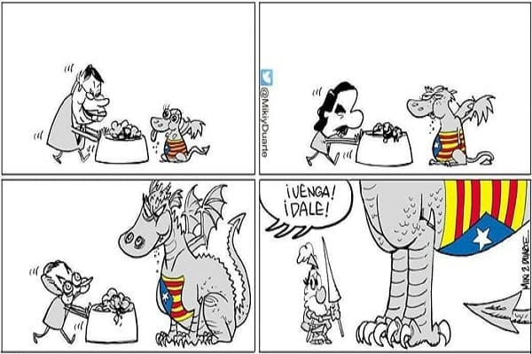

In the year 2017 we are witnessing one of the biggest political crises that is remembered in recent democracy in Spain. In it the Catalan Government autonomously proclaimed the Catalan Republic but then retracted seeing the personal problems they might have. The response of the mechanisms of the state was slow and insufficient seeing today where we are. The only positive thing is that these mistakes can be learned in the future and above all from the mistakes that have been made in recent decades, giving competences that should not fall on any autonomous community.
And is that there are functions that can be delegated and there are others that should be the state and the whole of the Spanish who decide and not a few in their own way.
The error of the successive governments that Spain has had since the transition has been to leave the flute to people who were going to use it for tasks that had not been programmed and once they had performed acts that did not correspond not knowing how to return to retake the competences. Today there is a lot of talk about the plural society and coexistence, but you just have to see where Catalonia is today with a completely divided society and where other autonomous communities are in everything that has nothing to do with ideology, left or right, (taxes and more open or closed ideas about how society should be), are united. Communities such as the two Castiles, Andalusia or the northwest always agree on the time to establish their rights to the central state without skipping what is voted in the Constitution. If the constitution is changed, it should be with the agreement of all and when it touches, not when it interests them.
And it is that recently have met 6 autonomous communities to talk about depopulation. This is where the senate of dialogue between the communities should operate, but without a doubt Catalonia is being alone with the rest of the communities, because of the selfishness of a few and because of leaders who have stolen and managed according to their interests. Without counting on others who await a long judicial way or others who will not return to Spain in a long time and will serve as an example for those who want to break the law. In ancient times those who tried to ursurp power without legitimacy were banished . Nowadays it is not necessary because they themselves van, advantage of modern times.
In January the Catalan Parliament was constituted. The president of the Catalan parliament, Roger Torrent, tried to make a state criminal wanted by international justice president , to which the Spanish Constitutional Court unanimously decided to reject it.
In February, the one that should be president and that could not be due to corruption issues among others of his former government was released because in the end he withdrew his words and appealed that the declaration of independence was not as such and that lied.
In March prison is agreed on those who participated in the declaration of independence or as some say the Catalan coup. For me more than a blow is an uprising on the part of Catalan society against the other party, since Catalonia is divided into two parts and have a problem in which the most harmed will be them but because of their actions at the end it will be expensive to the rest of Spaniards. Also in March it would stop who supposedly led the Catalan uprising, in Germany, which is not Belgium or any pseudostate. Belgium, a country that has had a serious problem of division for years due to the fiscal issue in which they want to divide the country, is precisely those that give asylum to criminals from other states. Germany would finally make a fool of himself with this issue and would get into Spanish state competitions as judge him in his territory without delivering it.
In April the Catalan government would still not govern Catalonia, devoting itself to waste time with appointments or other issues.
In May they would finally appoint Quim Torra as president, someone who declares himself an enemy of Spain and who has a history of communiqués in which he appeals that his objectives are to weaken the Spanish state.

With this we can see that the dialogue is never sought here, but the opposite is true, and the one who tries to dialogue with someone who wants to impose the only thing they can do is give up or waste time. This can be compared like when you try to give something to a kidnapper to recover something that is legitimately yours. By granting something you are losing, among other things, dignity. It can be granted to pursue an end if then in the medium term you will go back to where you were. This in the different governments of Spain has never been like this. The famous vignette on the right of Miki and Duarte is a clear example of this .
In June the councilors of the Catalan Government would take possession. The motion of censure presented by the PSOE in which Pedro Sanchez would be elected as the new president of the Government would also flourish.
In summer, those responsible for inducing the uprising in Catalonia would be transferred to Catalan prisons under the mandate of the new Government of Spain. From there to see that they were gaining positions would begin to happen a continuation of own events over a fascist regime as the mark of people who have different ideas and the sabotage of elements that manages the Spanish state, apart as the use of public elements for how are the media or the buildings belonging to the autonomous community of Catalonia to carry out propaganda to their interests.
Any regime needs elements such as the control of information , the closest case the regime of North Korea or Venezuela . Another element is the militias of the regime, in this case they are called CDRs and attack anyone who is against their ideas . There have been numerous acts of vandalism against those who serve customers in Spanish or who know different ideas. Marking their premises with graffiti and encouraging social networks not to buy for being according to them complices of Spain. These facts go even beyond these current regimes having been reproduced in fascist regimes, be it Spanish with Franco or German with Hitler, with the Nazi boycott of Jewish businesses .
Fortunately, a means that is indispensable for any regime that wants to leave only a minority of the population is the army that is totally against its claims. Even so they count on a regional police that the only thing that does is give problems of head so much to the national police as to the civil guard. Feed them and they will tear off your hand, the autonomous police another invention as an example .
With all this, how has these events affected the labor market in Spain, the economic activity of Catalan companies and the Spanish stock market?
Well here we come to the mother of the lamb and that we are all interested more than knowing exactly what has happened.
If in all 2017 it lost almost 2000 companies in the first half of the year this number has already been matched as can be seen in the graph published by the ABC with data provided by the registrar's association.
 And who is the community most benefited from all this. Even though it seems paradoxical in the end what is benefiting from the so-called "process" is the community of Madrid that in 2017 received 2,500 companies from the rest of Spain and that has absorbed another 1000 companies in Catalonia this year.
And who is the community most benefited from all this. Even though it seems paradoxical in the end what is benefiting from the so-called "process" is the community of Madrid that in 2017 received 2,500 companies from the rest of Spain and that has absorbed another 1000 companies in Catalonia this year.
It is clear that those who produce wealth in Catalonia are not willing to have their taxes go to this band of brainless. And the fact is that most of the social agitators in Catalonia who enjoy this tension are people who neither work nor study. So they can afford to bother the days of the day, cut streets and highways or disturb people's businesses precisely so that they can have those services and payments they need to live.
And it seems paradoxical that after all this loss of money, and how is Catalan health and transport, politicians there raise salaries, starting with the current president of the Generalitat who charges almost twice as much as the president of the government as you can see in the following table.
| Cargo | Gobierno Central | Gobierno autonómico | Diferencia (%) | Presidente | 80.953 € | 146.926 € | 81,43 % | Ministros / Consejeros | 71.424 € | 110.760 € | 55,07 % | Secretarios generales | 70.788 € | 85.769 € | 21,16 % | Directores generales | 54.189 € | 82.210 € | 51,71 % |
|---|
If we try to take to paper all these situations that have possibly influenced the Spanish index and some value, the situation would be like that of the acontinuation graph.
It is reflected as when the European indices have had a rally in times of increases, January to May, the IBEX35 has been almost stagnant and values such as CaixaBank which are Catalan have behaved quite correlated with the IBEX35. This is because they are no longer influenced so much by the fact that last year they had been unmarked from the separatist paranoia and having changed their fiscal headquarters. This can be clearly seen if we compare 2017 and 2018 of Caixabank with a much more negative correlation last year than this one.
In addition, at present values that suffered a lot with the events have behaved much better when the IBEX35 did not arrive well. On the other hand, when the wind picked up in Catalonia as the appointment of Quim Torra, they fell suddenly and correlated with the IBEX. When on the other hand the wind raged in Madrid with the doubts of the new president of the Government these values have taken a greater respite than in the IBEX35.
© 2016 - All Rights Reserved - Diseñada por Sergio López Martínez
![[Valid RSS]](https://www.feedvalidator.org/images/valid-rss-rogers.png "Validate my RSS feed")